pacman::p_load(sf, tmap, tidyverse)Hands-on Exercise 9
mpsz <- st_read(dsn = "data/geospatial",
layer = "MP14_SUBZONE_WEB_PL")Reading layer `MP14_SUBZONE_WEB_PL' from data source
`/Users/mengxinyu/ISSS608-VAA/Hands-on_Ex/Hands-on_Ex09/data/geospatial'
using driver `ESRI Shapefile'
Simple feature collection with 323 features and 15 fields
Geometry type: MULTIPOLYGON
Dimension: XY
Bounding box: xmin: 2667.538 ymin: 15748.72 xmax: 56396.44 ymax: 50256.33
Projected CRS: SVY21popdata <- read_csv("data/aspatial/respopagesextod2011to2020.csv")Rows: 984656 Columns: 7
── Column specification ────────────────────────────────────────────────────────
Delimiter: ","
chr (5): PA, SZ, AG, Sex, TOD
dbl (2): Pop, Time
ℹ Use `spec()` to retrieve the full column specification for this data.
ℹ Specify the column types or set `show_col_types = FALSE` to quiet this message.popdata <- read_csv("data/aspatial/respopagesextod2011to2020.csv",
show_col_types = FALSE)21 Choropleth Mapping with R
21.3.4 Data Preparation
popdata2020 <- popdata %>%
filter(Time == 2020) %>%
group_by(PA, SZ, AG) %>%
summarise(`POP` = sum(`Pop`)) %>%
ungroup() %>%
pivot_wider(names_from=AG,
values_from=POP) %>%
mutate(YOUNG = rowSums(.[3:6])
+rowSums(.[12])) %>%
mutate(`ECONOMY ACTIVE` = rowSums(.[7:11])+
rowSums(.[13:15]))%>%
mutate(`AGED`=rowSums(.[16:21])) %>%
mutate(`TOTAL`=rowSums(.[3:21])) %>%
mutate(`DEPENDENCY` = (`YOUNG` + `AGED`)
/`ECONOMY ACTIVE`) %>%
select(`PA`, `SZ`, `YOUNG`,
`ECONOMY ACTIVE`, `AGED`,
`TOTAL`, `DEPENDENCY`)`summarise()` has regrouped the output.
ℹ Summaries were computed grouped by PA, SZ, and AG.
ℹ Output is grouped by PA and SZ.
ℹ Use `summarise(.groups = "drop_last")` to silence this message.
ℹ Use `summarise(.by = c(PA, SZ, AG))` for per-operation grouping
(`?dplyr::dplyr_by`) instead.popdata2020 <- popdata2020 %>%
mutate(across(c(PA, SZ), toupper)) %>%
filter(`ECONOMY ACTIVE` > 0)
mpsz_pop2020 <- left_join(mpsz, popdata2020,
by = c("SUBZONE_N" = "SZ"))
write_rds(mpsz_pop2020, "data/rds/mpszpop2020.rds")21.4 Choropleth Mapping Geospatial Data Using tmap
21.4.1 Plotting a choropleth map quickly by using qtm()
tmap_mode("plot")ℹ tmap modes "plot" - "view"
ℹ toggle with `tmap::ttm()`qtm(mpsz_pop2020,
fill = "DEPENDENCY")
21.4.2 Creating a choropleth map by using tmap’s elements
tm_shape(mpsz_pop2020)+
tm_polygons(fill = "DEPENDENCY",
fill.scale = tm_scale_intervals(
style = "quantile",
n = 5,
values = "brewer.blues"),
fill.legend = tm_legend(
title = "Dependency ratio")) +
tm_title("Distribution of Dependency Ratio by planning subzone") +
tm_layout(frame = TRUE) +
tm_borders(fill_alpha = 0.5) +
tm_compass(type="8star", size = 2) +
tm_grid(alpha =0.2) +
tm_credits("Source: Planning Sub-zone boundary from Urban Redevelopment Authorithy (URA)\n and Population data from Department of Statistics DOS",
position = c("left", "bottom"))[plot mode] fit legend/component: Some legend items or map compoments do not
fit well, and are therefore rescaled.
ℹ Set the tmap option `component.autoscale = FALSE` to disable rescaling.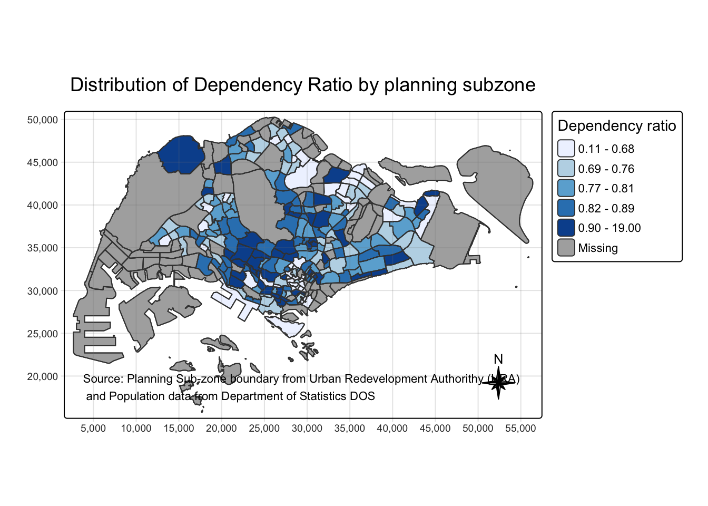
21.4.2.1 Drawing a base map
tm_shape(mpsz_pop2020) +
tm_polygons()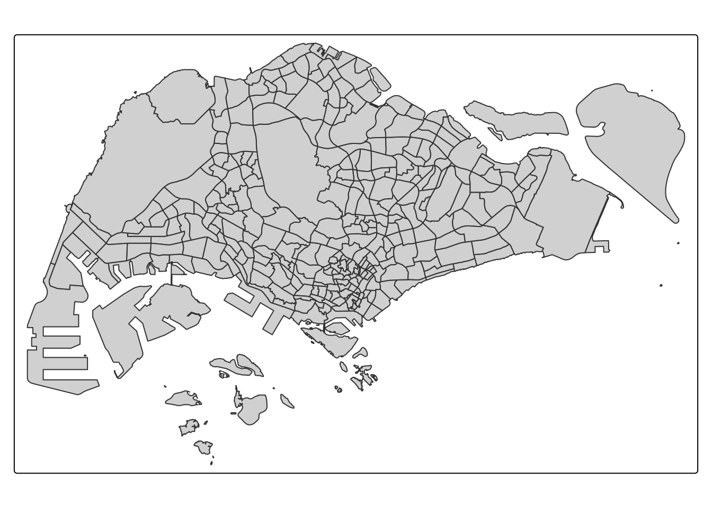
21.4.2.2 Drawing a choropleth map using tm_polygons()
tm_shape(mpsz_pop2020)+
tm_polygons("DEPENDENCY")
21.4.2.3 Drawing a choropleth map using tm_fill() and *tm_border()**
tm_shape(mpsz_pop2020)+
tm_fill("DEPENDENCY")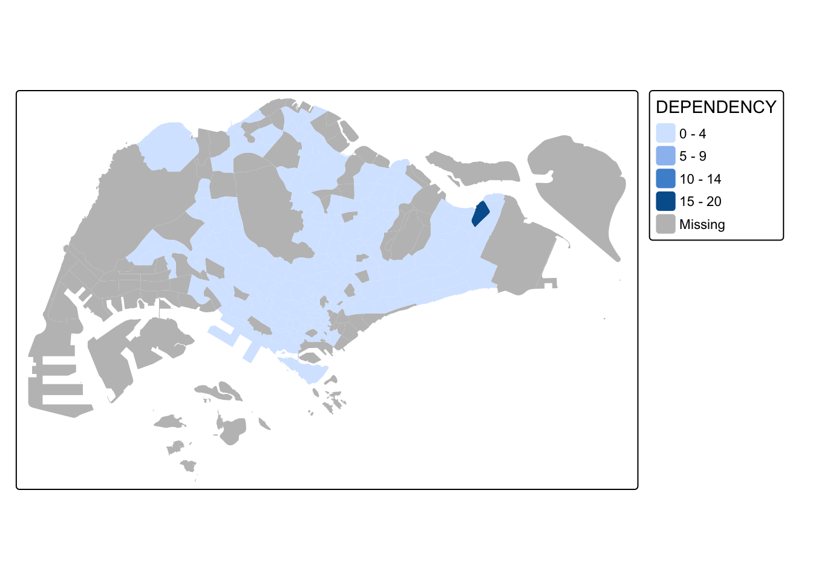
tm_shape(mpsz_pop2020)+
tm_polygons(fill = "DEPENDENCY") +
tm_borders(lwd = 0.01,
fill_alpha = 0.1)
21.4.3 Data classification methods of tmap
21.4.3.1 Plotting choropleth maps with built-in classification methods
tm_shape(mpsz_pop2020)+
tm_polygons("DEPENDENCY",
fill.scale = tm_scale_intervals(
style = "jenks",
n = 5)) +
tm_borders(fill_alpha = 0.5)
tm_shape(mpsz_pop2020)+
tm_polygons("DEPENDENCY",
fill.scale = tm_scale_intervals(
style = "equal",
n = 5)) +
tm_borders(fill_alpha = 0.5)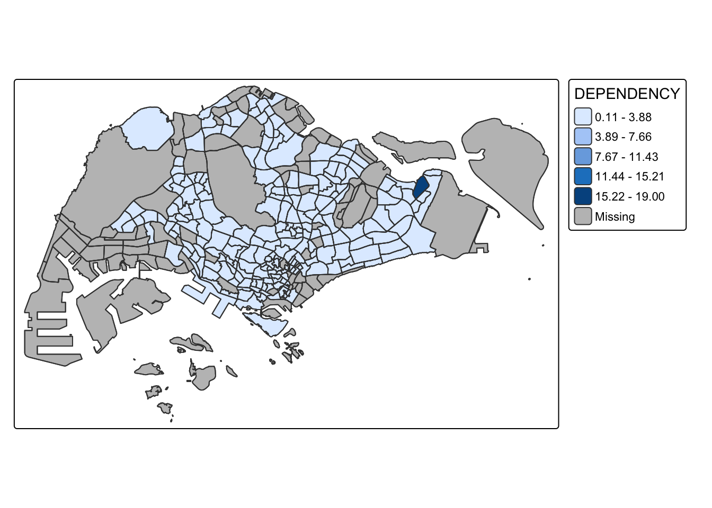
21.4.3.2 Plotting choropleth map with custome break
summary(mpsz_pop2020$DEPENDENCY) Min. 1st Qu. Median Mean 3rd Qu. Max. NA's
0.1111 0.7147 0.7867 0.8585 0.8763 19.0000 92 tm_shape(mpsz_pop2020)+
tm_polygons("DEPENDENCY",
breaks = c(0, 0.60, 0.70, 0.80, 0.90, 1.00)) +
tm_borders(fill_alpha = 0.5)── tmap v3 code detected ───────────────────────────────────────────────────────[v3->v4] `tm_tm_polygons()`: migrate the argument(s) related to the scale of
the visual variable `fill` namely 'breaks' to fill.scale = tm_scale(<HERE>).Warning: Values have found that are higher than the highest break. They are
assigned to the highest interval
21.4.4 Colour Scheme
21.4.4.1 Using ColourBrewer palette
tm_shape(mpsz_pop2020)+
tm_polygons("DEPENDENCY",
fill.scale = tm_scale_intervals(
style = "quantile",
n = 5,
values = "brewer.greens")) +
tm_borders(fill_alpha = 0.5)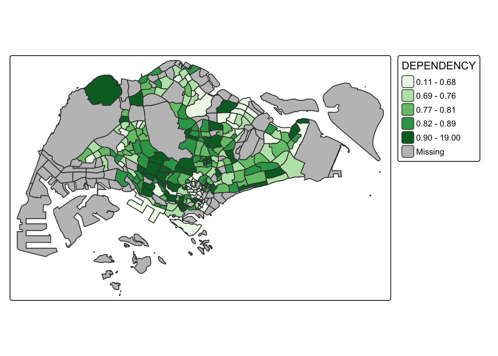
tm_shape(mpsz_pop2020)+
tm_polygons("DEPENDENCY",
fill.scale = tm_scale_intervals(
style = "quantile",
n = 5,
values = "-brewer.greens")) +
tm_borders(fill_alpha = 0.5)
21.4.5 Map Layouts
21.4.5.1 Map Legend
tm_shape(mpsz_pop2020)+
tm_polygons("DEPENDENCY",
fill.scale = tm_scale_intervals(
style = "jenks",
n = 5,
values = "brewer.greens"),
fill.legend = tm_legend(
title = "Dependency ratio")) +
tm_borders(fill_alpha = 0.5) +
tm_title("Distribution of Dependency Ratio by planning subzone \n(Jenks classification)")
21.4.5.2 Map style
tm_shape(mpsz_pop2020)+
tm_fill("DEPENDENCY",
style = "quantile",
palette = "-Greens") +
tm_borders(alpha = 0.5) +
tmap_style("classic")── tmap v3 code detected ───────────────────────────────────────────────────────[v3->v4] `tm_fill()`: instead of `style = "quantile"`, use fill.scale =
`tm_scale_intervals()`.
ℹ Migrate the argument(s) 'style', 'palette' (rename to 'values') to
'tm_scale_intervals(<HERE>)'
[v3->v4] `tm_borders()`: use 'fill' for the fill color of polygons/symbols
(instead of 'col'), and 'col' for the outlines (instead of 'border.col').
[v3->v4] `tm_borders()`: use `fill_alpha` instead of `alpha`.
style set to "classic"
other available styles are: "white" (tmap default), "gray", "natural", "cobalt", "albatross", "beaver", "bw", "watercolor"
tmap v3 styles: "v3" (tmap v3 default), "gray_v3", "natural_v3", "cobalt_v3", "albatross_v3", "beaver_v3", "bw_v3", "classic_v3", "watercolor_v3"
Multiple palettes called "greens" found: "brewer.greens", "matplotlib.greens". The first one, "brewer.greens", is returned.
[cols4all] color palettes: use palettes from the R package cols4all. Run
`cols4all::c4a_gui()` to explore them. The old palette name "-Greens" is named
"greens" (in long format "brewer.greens")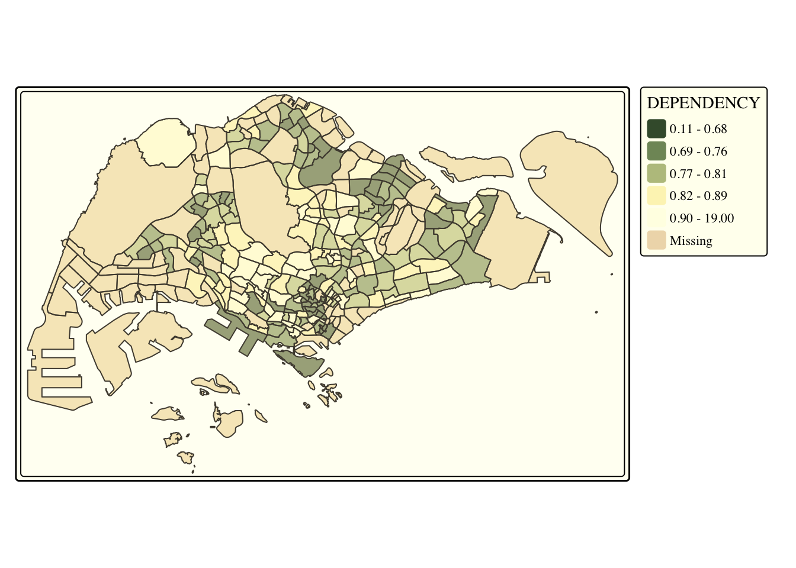
21.4.5.3 Cartographic Furniture
tmap_style("classic")style set to "classic"other available styles are: "white" (tmap default), "gray", "natural", "cobalt", "albatross", "beaver", "bw", "watercolor"tmap v3 styles: "v3" (tmap v3 default), "gray_v3", "natural_v3", "cobalt_v3", "albatross_v3", "beaver_v3", "bw_v3", "classic_v3", "watercolor_v3"tm_shape(mpsz_pop2020)+
tm_polygons(fill = "DEPENDENCY",
fill.scale = tm_scale_intervals(
style = "quantile",
n = 5,
values = "brewer.blues"),
fill.legend = tm_legend(
title = "Dependency ratio")) +
tm_title("Distribution of Dependency Ratio by planning subzone") +
tm_layout(frame = TRUE) +
tm_borders(fill_alpha = 0.5) +
tm_compass(type="8star", size = 2) +
tm_grid(alpha =0.2) +
tm_credits("Source: Planning Sub-zone boundary from Urban Redevelopment Authorithy (URA)\n and Population data from Department of Statistics DOS",
position = c("left", "bottom"))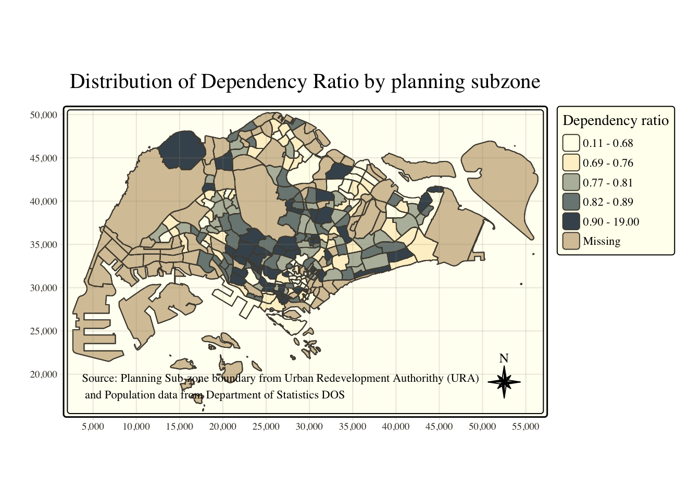
21.4.6 Drawing Small Multiple Choropleth Maps
21.4.6.1 By assigning multiple values to at least one of the aesthetic arguments
tm_shape(mpsz_pop2020)+
tm_fill(c("YOUNG", "AGED"),
style = "equal",
palette = "Blues") +
tm_layout(legend.position = c("right", "bottom")) +
tm_borders(alpha = 0.5) +
tmap_style("white")── tmap v3 code detected ───────────────────────────────────────────────────────[v3->v4] `tm_fill()`: instead of `style = "equal"`, use fill.scale =
`tm_scale_intervals()`.
ℹ Migrate the argument(s) 'style', 'palette' (rename to 'values') to
'tm_scale_intervals(<HERE>)'
[v3->v4] `tm_borders()`: use `fill_alpha` instead of `alpha`.
style set to "white" (tmap default)
other available styles are: "gray", "natural", "cobalt", "albatross", "beaver", "bw", "classic", "watercolor"
tmap v3 styles: "v3" (tmap v3 default), "gray_v3", "natural_v3", "cobalt_v3", "albatross_v3", "beaver_v3", "bw_v3", "classic_v3", "watercolor_v3"
[cols4all] color palettes: use palettes from the R package cols4all. Run
`cols4all::c4a_gui()` to explore them. The old palette name "Blues" is named
"brewer.blues"
Multiple palettes called "blues" found: "brewer.blues", "matplotlib.blues". The first one, "brewer.blues", is returned.
Multiple palettes called "blues" found: "brewer.blues", "matplotlib.blues". The first one, "brewer.blues", is returned.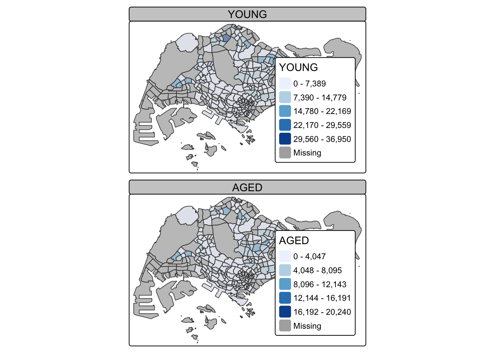
tm_shape(mpsz_pop2020)+
tm_polygons(c("DEPENDENCY","AGED"),
style = c("equal", "quantile"),
palette = list("Blues","Greens")) +
tm_layout(legend.position = c("right", "bottom"))── tmap v3 code detected ───────────────────────────────────────────────────────[v3->v4] `tm_polygons()`: instead of `style = "equal"`, use fill.scale =
`tm_scale_intervals()`.
ℹ Migrate the argument(s) 'style', 'palette' (rename to 'values') to
'tm_scale_intervals(<HERE>)'
For small multiples, specify a 'tm_scale_' for each multiple, and put them in a
list: 'fill'.scale = list(<scale1>, <scale2>, ...)'
[cols4all] color palettes: use palettes from the R package cols4all. Run
`cols4all::c4a_gui()` to explore them. The old palette name "Blues" is named
"brewer.blues"
Multiple palettes called "blues" found: "brewer.blues", "matplotlib.blues". The first one, "brewer.blues", is returned.
Multiple palettes called "blues" found: "brewer.blues", "matplotlib.blues". The first one, "brewer.blues", is returned.
21.4.6.2 By defining a group-by variable in tm_facets()
tm_shape(mpsz_pop2020) +
tm_fill("DEPENDENCY",
style = "quantile",
palette = "Blues",
thres.poly = 0) +
tm_facets(by="REGION_N",
free.coords=TRUE) +
tm_layout(legend.show = FALSE,
title.position = c("center", "center"),
title.size = 20) +
tm_borders(alpha = 0.5)── tmap v3 code detected ───────────────────────────────────────────────────────[v3->v4] `tm_fill()`: instead of `style = "quantile"`, use fill.scale =
`tm_scale_intervals()`.
ℹ Migrate the argument(s) 'style', 'palette' (rename to 'values') to
'tm_scale_intervals(<HERE>)'
[v3->v4] `tm_borders()`: use `fill_alpha` instead of `alpha`.
[cols4all] color palettes: use palettes from the R package cols4all. Run
`cols4all::c4a_gui()` to explore them. The old palette name "Blues" is named
"brewer.blues"
Multiple palettes called "blues" found: "brewer.blues", "matplotlib.blues". The first one, "brewer.blues", is returned.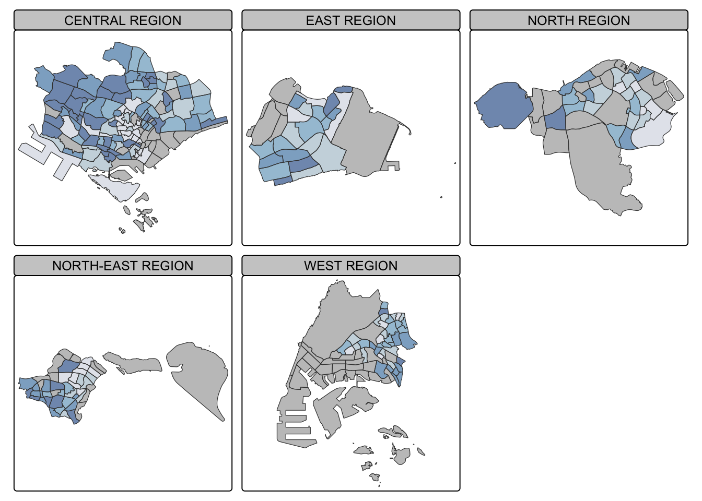
21.4.6.3 By creating multiple stand-alone maps with tmap_arrange()
youngmap <- tm_shape(mpsz_pop2020)+
tm_polygons("YOUNG",
style = "quantile",
palette = "Blues")── tmap v3 code detected ───────────────────────────────────────────────────────[v3->v4] `tm_polygons()`: instead of `style = "quantile"`, use fill.scale =
`tm_scale_intervals()`.
ℹ Migrate the argument(s) 'style', 'palette' (rename to 'values') to
'tm_scale_intervals(<HERE>)'agedmap <- tm_shape(mpsz_pop2020)+
tm_polygons("AGED",
style = "quantile",
palette = "Blues")
tmap_arrange(youngmap, agedmap, asp=1, ncol=2)[cols4all] color palettes: use palettes from the R package cols4all. Run
`cols4all::c4a_gui()` to explore them. The old palette name "Blues" is named
"brewer.blues"
Multiple palettes called "blues" found: "brewer.blues", "matplotlib.blues". The first one, "brewer.blues", is returned.
[cols4all] color palettes: use palettes from the R package cols4all. Run
`cols4all::c4a_gui()` to explore them. The old palette name "Blues" is named
"brewer.blues"
Multiple palettes called "blues" found: "brewer.blues", "matplotlib.blues". The first one, "brewer.blues", is returned.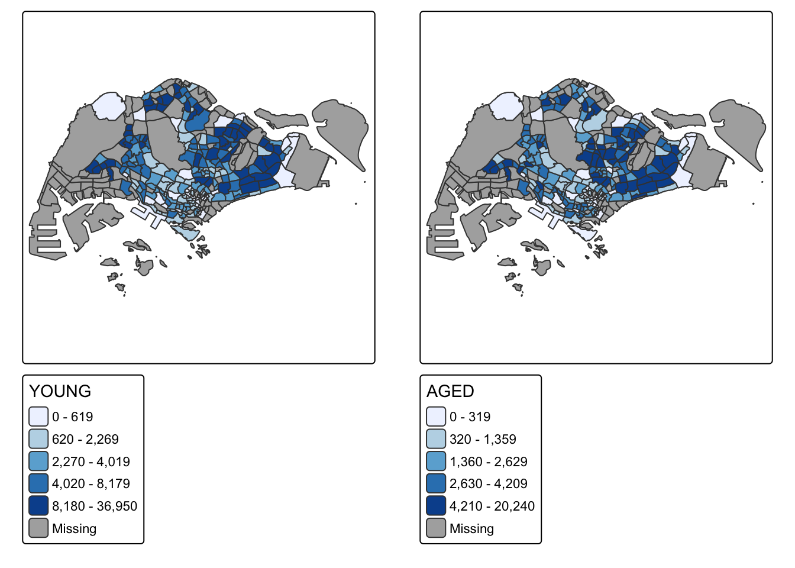
21.4.7 Mappping Spatial Object Meeting a Selection Criterion
tm_shape(mpsz_pop2020[mpsz_pop2020$REGION_N=="CENTRAL REGION", ])+
tm_fill("DEPENDENCY",
style = "quantile",
palette = "Blues",
legend.hist = TRUE,
legend.is.portrait = TRUE,
legend.hist.z = 0.1) +
tm_layout(legend.outside = TRUE,
legend.height = 0.45,
legend.width = 5.0,
legend.position = c("right", "bottom"),
frame = FALSE) +
tm_borders(alpha = 0.5)── tmap v3 code detected ───────────────────────────────────────────────────────[v3->v4] `tm_fill()`: instead of `style = "quantile"`, use fill.scale =
`tm_scale_intervals()`.
ℹ Migrate the argument(s) 'style', 'palette' (rename to 'values') to
'tm_scale_intervals(<HERE>)'
[v3->v4] `tm_fill()`: migrate the argument(s) related to the legend of the
visual variable `fill` namely 'legend.is.portrait' (rename to 'orientation') to
'fill.legend = tm_legend(<HERE>)'
[v3->v4] `tm_fill()`: use `fill.chart = tm_chart_histogram()` instead of
`legend.hist = TRUE`.
[v3->v4] `tm_borders()`: use `fill_alpha` instead of `alpha`.
[cols4all] color palettes: use palettes from the R package cols4all. Run
`cols4all::c4a_gui()` to explore them. The old palette name "Blues" is named
"brewer.blues"
Multiple palettes called "blues" found: "brewer.blues", "matplotlib.blues". The first one, "brewer.blues", is returned.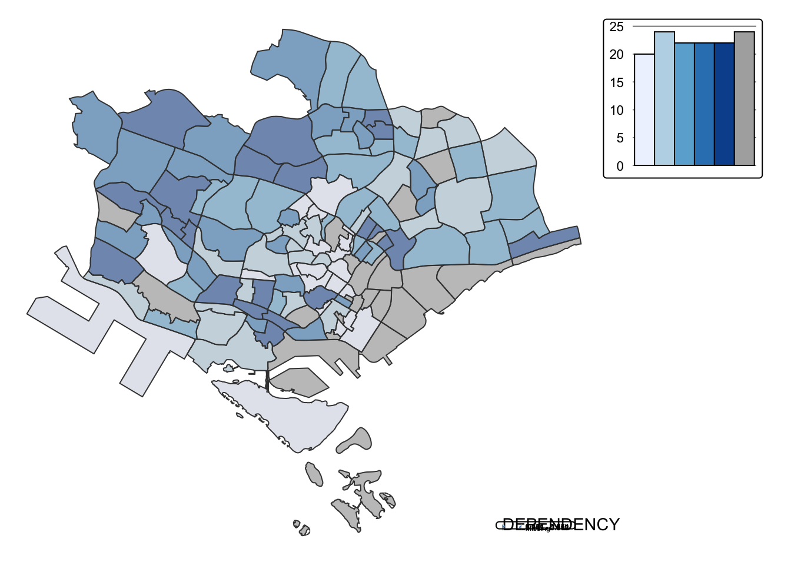
22 Visualising Geospatial Point Data
pacman::p_load(sf, tmap, tidyverse)22.2 Data Import and Preparation
sgpools <- read_csv("data/aspatial/SGPools_svy21.csv")Rows: 306 Columns: 7
── Column specification ────────────────────────────────────────────────────────
Delimiter: ","
chr (3): NAME, ADDRESS, OUTLET TYPE
dbl (4): POSTCODE, XCOORD, YCOORD, Gp1Gp2 Winnings
ℹ Use `spec()` to retrieve the full column specification for this data.
ℹ Specify the column types or set `show_col_types = FALSE` to quiet this message.list(sgpools) [[1]]
# A tibble: 306 × 7
NAME ADDRESS POSTCODE XCOORD YCOORD `OUTLET TYPE` `Gp1Gp2 Winnings`
<chr> <chr> <dbl> <dbl> <dbl> <chr> <dbl>
1 Livewire (Mar… 2 Bayf… 18972 30842. 29599. Branch 5
2 Livewire (Res… 26 Sen… 98138 26704. 26526. Branch 11
3 SportsBuzz (K… Lotus … 738078 20118. 44888. Branch 0
4 SportsBuzz (P… 1 Sele… 188306 29777. 31382. Branch 44
5 Prime Serango… Blk 54… 552542 32239. 39519. Branch 0
6 Singapore Poo… 1A Woo… 731001 21012. 46987. Branch 3
7 Singapore Poo… Blk 64… 370064 33990. 34356. Branch 17
8 Singapore Poo… Blk 88… 370088 33847. 33976. Branch 16
9 Singapore Poo… Blk 30… 540308 33910. 41275. Branch 21
10 Singapore Poo… Blk 20… 560202 29246. 38943. Branch 25
# ℹ 296 more rows22.3 Creating a sf data frame from an aspatial data frame
sgpools_sf <- st_as_sf(sgpools,
coords = c("XCOORD", "YCOORD"),
crs= 3414)
list(sgpools_sf)[[1]]
Simple feature collection with 306 features and 5 fields
Geometry type: POINT
Dimension: XY
Bounding box: xmin: 7844.194 ymin: 26525.7 xmax: 45176.57 ymax: 47987.13
Projected CRS: SVY21 / Singapore TM
# A tibble: 306 × 6
NAME ADDRESS POSTCODE `OUTLET TYPE` `Gp1Gp2 Winnings`
* <chr> <chr> <dbl> <chr> <dbl>
1 Livewire (Marina Bay Sands) 2 Bayf… 18972 Branch 5
2 Livewire (Resorts World Sen… 26 Sen… 98138 Branch 11
3 SportsBuzz (Kranji) Lotus … 738078 Branch 0
4 SportsBuzz (PoMo) 1 Sele… 188306 Branch 44
5 Prime Serangoon North Blk 54… 552542 Branch 0
6 Singapore Pools Woodlands C… 1A Woo… 731001 Branch 3
7 Singapore Pools 64 Circuit … Blk 64… 370064 Branch 17
8 Singapore Pools 88 Circuit … Blk 88… 370088 Branch 16
9 Singapore Pools Anchorvale … Blk 30… 540308 Branch 21
10 Singapore Pools Ang Mo Kio … Blk 20… 560202 Branch 25
# ℹ 296 more rows
# ℹ 1 more variable: geometry <POINT [m]>22.4 Drawing Proportional Symbol Map
#tmap_mode("view")
tmap_mode("plot")ℹ tmap modes "plot" - "view"22.4.1 It all started with an interactive point symbol map
tm_shape(sgpools_sf) +
tm_bubbles(fill = "red",
size = 1,
col = "black",
lwd = 1)
22.4.2 Lets make it proportional
tm_shape(sgpools_sf) +
tm_bubbles(fill = "red",
size = "Gp1Gp2 Winnings",
col = "black",
lwd = 1)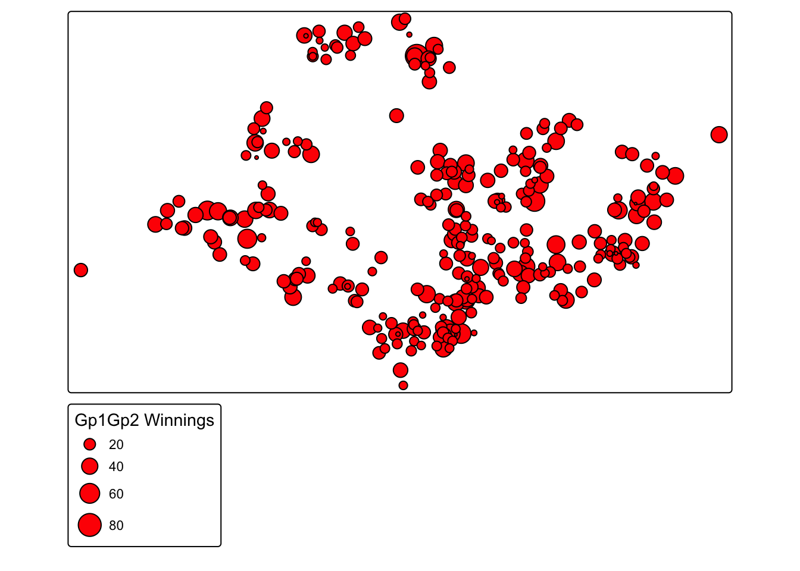
22.4.3 Lets give it a different colour
tm_shape(sgpools_sf) +
tm_bubbles(fill = "OUTLET TYPE",
size = "Gp1Gp2 Winnings",
col = "black",
lwd = 1)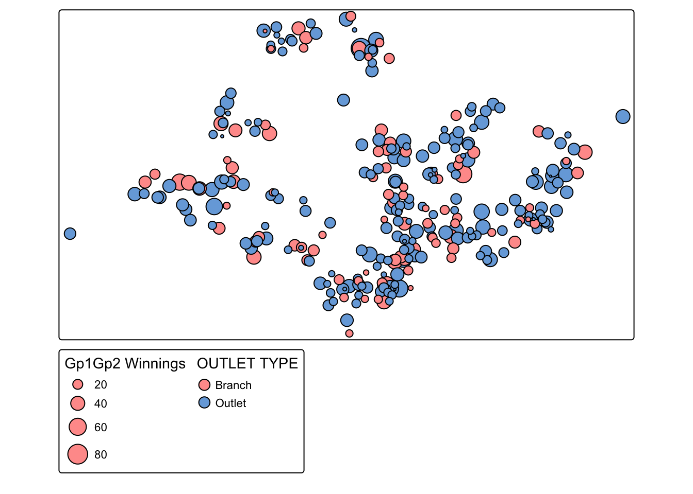
22.4.4 I have a twin brothers :)
tm_shape(sgpools_sf) +
tm_bubbles(fill = "OUTLET TYPE",
size = "Gp1Gp2 Winnings",
col = "black",
lwd = 1) +
tm_facets(by= "OUTLET TYPE",
nrow = 1,
sync = TRUE)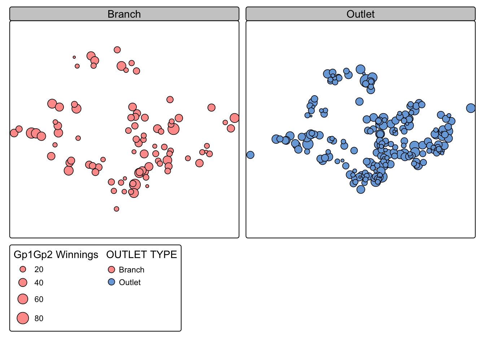
23 Analytical Mapping
23.2 Getting Started
23.2.1 Installing and loading packages
pacman::p_load(tmap, tidyverse, sf)23.2.2 Importing data
NGA_wp <- read_rds("data/rds/NGA_wp.rds")23.3 Basic Choropleth Mapping
23.3.1 Visualising distribution of non-functional water point
p1 <- tm_shape(NGA_wp) +
tm_polygons(fill = "wp_functional",
fill.scale = tm_scale_intervals(
style = "equal",
n = 10,
values = "brewer.blues"),
fill.legend = tm_legend(
position = c("right", "bottom"))) +
tm_borders(lwd = 0.1,
fill_alpha = 1) +
tm_title("Distribution of functional water point by LGAs")
p2 <- tm_shape(NGA_wp) +
tm_polygons(fill = "total_wp",
fill.scale = tm_scale_intervals(
style = "equal",
n = 10,
values = "brewer.blues"),
fill.legend = tm_legend(
position = c("right", "bottom"))) +
tm_borders(lwd = 0.1,
fill_alpha = 1) +
tm_title("Distribution of total water point by LGAs")
tmap_arrange(p2, p1, nrow = 1)[plot mode] fit legend/component: Some legend items or map compoments do not
fit well, and are therefore rescaled.
ℹ Set the tmap option `component.autoscale = FALSE` to disable rescaling.
[plot mode] fit legend/component: Some legend items or map compoments do not
fit well, and are therefore rescaled.
ℹ Set the tmap option `component.autoscale = FALSE` to disable rescaling.
23.4 Choropleth Map for Rates
23.4.1 Deriving Proportion of Functional Water Points and Non-Functional Water Points
NGA_wp <- NGA_wp %>%
mutate(pct_functional = wp_functional/total_wp) %>%
mutate(pct_nonfunctional = wp_nonfunctional/total_wp)23.4.2 Plotting map of rate
tm_shape(NGA_wp) +
tm_polygons("pct_functional",
fill.scale = tm_scale_intervals(
style = "equal",
n = 10,
values = "brewer.blues"),
fill.legend = tm_legend(
position = c("right", "bottom"))) +
tm_borders(lwd = 0.1,
fill_alpha = 1) +
tm_title("Rate map of functional water point by LGAs")
23.5 Extreme Value Maps
23.5.1 Percentile Map
23.5.1.1 Data Preparation
NGA_wp <- NGA_wp %>%
drop_na()
percent <- c(0,.01,.1,.5,.9,.99,1)
var <- NGA_wp["pct_functional"] %>%
st_set_geometry(NULL)
quantile(var[,1], percent) 0% 1% 10% 50% 90% 99% 100%
0.0000000 0.0000000 0.2169811 0.4791667 0.8611111 1.0000000 1.0000000 23.5.1.2 Why writing functions?
#Writing a function has three big advantages over using copy-and-paste:
#You can give a function an evocative name that makes your code easier to understand.
#As requirements change, you only need to update code in one place, instead of many.
#You eliminate the chance of making incidental mistakes when you copy and paste (i.e. updating a variable name in one place, but not in another).23.5.1.3 Creating the get.var function
get.var <- function(vname,df) {
v <- df[vname] %>%
st_set_geometry(NULL)
v <- unname(v[,1])
return(v)
}23.5.1.4 A percentile mapping function
percentmap <- function(vnam, df, legtitle = NA, mtitle = "Percentile Map") {
percent <- c(0, .01, .1, .5, .9, .99, 1)
var <- get.var(vnam, df)
bperc <- quantile(var, percent)
tm_shape(df) +
tm_polygons() +
tm_shape(df) +
tm_polygons(fill = vnam,
fill.scale = tm_scale_intervals(
breaks = bperc,
values = "brewer.blues",
labels = c("< 1%", "1% - 10%", "10% - 50%",
"50% - 90%", "90% - 99%", "> 99%")),
fill.legend = tm_legend(title = legtitle)) +
tm_borders() +
tm_title(mtitle)
}23.5.1.5 Test drive the percentile mapping function
percentmap("total_wp", NGA_wp)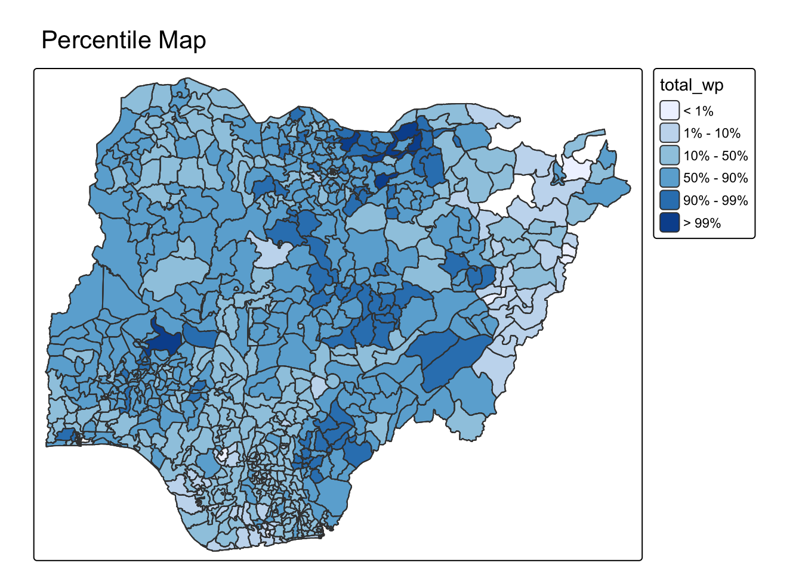
23.5.2 Box map
ggplot(data = NGA_wp,
aes(x = "",
y = wp_nonfunctional)) +
geom_boxplot()
23.5.2.1 Creating the boxbreaks function
boxbreaks <- function(v,mult=1.5) {
qv <- unname(quantile(v))
iqr <- qv[4] - qv[2]
upfence <- qv[4] + mult * iqr
lofence <- qv[2] - mult * iqr
# initialize break points vector
bb <- vector(mode="numeric",length=7)
# logic for lower and upper fences
if (lofence < qv[1]) { # no lower outliers
bb[1] <- lofence
bb[2] <- floor(qv[1])
} else {
bb[2] <- lofence
bb[1] <- qv[1]
}
if (upfence > qv[5]) { # no upper outliers
bb[7] <- upfence
bb[6] <- ceiling(qv[5])
} else {
bb[6] <- upfence
bb[7] <- qv[5]
}
bb[3:5] <- qv[2:4]
return(bb)
}23.5.2.2 Creating the get.var function
get.var <- function(vname,df) {
v <- df[vname] %>% st_set_geometry(NULL)
v <- unname(v[,1])
return(v)
}23.5.2.3 Test drive the newly created function
var <- get.var("wp_nonfunctional", NGA_wp)
boxbreaks(var)[1] -56.5 0.0 14.0 34.0 61.0 131.5 278.023.5.2.4 Boxmap function
boxmap <- function(vnam, df,
legtitle=NA,
mtitle="Box Map",
mult=1.5){
var <- get.var(vnam,df)
bb <- boxbreaks(var)
tm_shape(df) +
tm_polygons() +
tm_shape(df) +
tm_fill(vnam,title=legtitle,
breaks=bb,
palette="Blues",
labels = c("lower outlier",
"< 25%",
"25% - 50%",
"50% - 75%",
"> 75%",
"upper outlier")) +
tm_borders() +
tm_layout(main.title = mtitle,
title.position = c("left",
"top"))
}tmap_mode("plot")ℹ tmap modes "plot" - "view"boxmap("wp_nonfunctional", NGA_wp)
── tmap v3 code detected ───────────────────────────────────────────────────────
[v3->v4] `tm_tm_fill()`: migrate the argument(s) related to the scale of the
visual variable `fill` namely 'breaks', 'palette' (rename to 'values'),
'labels' to fill.scale = tm_scale(<HERE>).[v3->v4] `tm_fill()`: migrate the argument(s) related to the legend of the
visual variable `fill` namely 'title' to 'fill.legend = tm_legend(<HERE>)'[v3->v4] `tm_layout()`: use `tm_title()` instead of `tm_layout(title = )`[v3->v4] `tm_layout()`: use `tm_title()` instead of `tm_layout(main.title = )`[cols4all] color palettes: use palettes from the R package cols4all. Run
`cols4all::c4a_gui()` to explore them. The old palette name "Blues" is named
"brewer.blues"Multiple palettes called "blues" found: "brewer.blues", "matplotlib.blues". The first one, "brewer.blues", is returned.